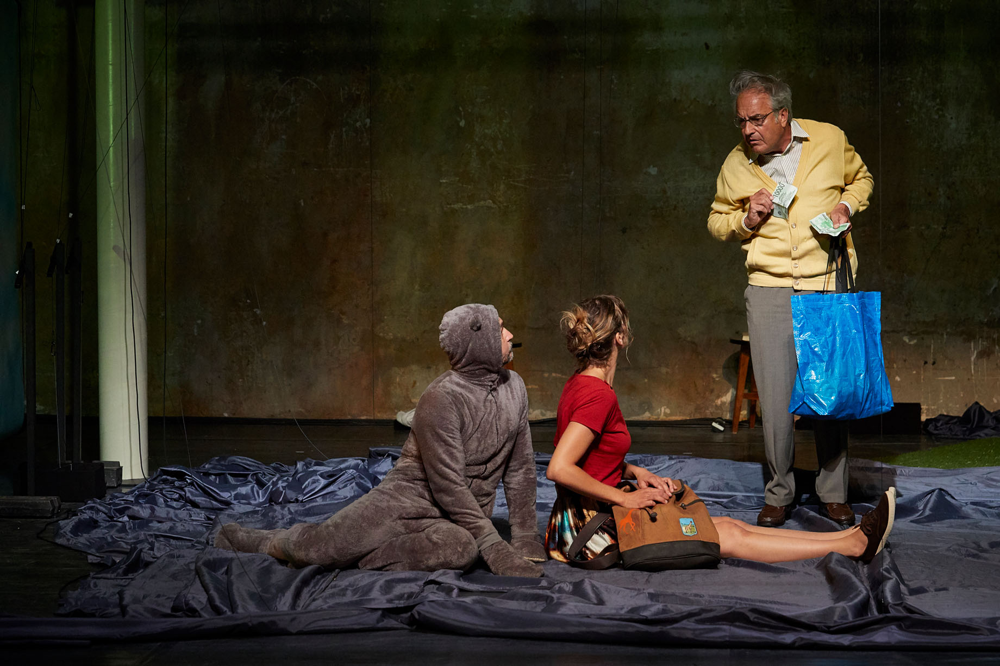

Tiago Rodrigues est un dramaturge, comédien et metteur en scène Portugais.
Il est actuellement directeur du festival d'Avignon, et directeur artistique du Théâtre Dona Maria
II de Lisbonne. C'est en 2011 qu'il écrit Tristesse et joie dans la vie des girafes
.
La pièce se présente sous la forme d'un exposé présenté par Girafe, jeune fille
de 9 ans qui nous raconte son aventure. Dans le but d'avoir Discovery Channel Jusqu'au restant de ses jours
,
elle traverse la ville de Lisbonne à la recherche de la seule personne qui est capable de l'aider: Pedro Passos Coelho,
premier ministre du Portugal. Elle est accompagnée tout au long de son aventure par le personnage quelque peu étrange
qu'est Judy Garland: ours en peluche qui rêve d'aventure... et de se faire tuer.
Sans mon accord (Je n'avais qu'à pas participer aux mobilités Erasmus :P), il a été décidé que je jouerai le premier ministre, Pedro Manuel Mamede Passos Coelho. Je suis donc présent dans les parties une et deux de la scène 25. Je joue aussi dans la scène 27 avec tout le monde, pour enfin réaliser le veu de Judy Garland qui est de mettre fin à sa vie.
Note: Cette scène a été travaillée dans le cadre de notre atelier avec Cyril Brisse